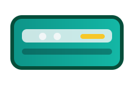
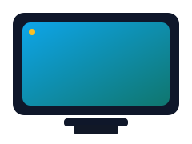
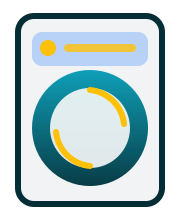

Buzdolabı
Soğutmayan, ses yapan ve su kaçağı bulunan buzdolaplarına yerinde müdahale ediyoruz.
Buzdolabı servisiHer cihaz için ayrı ekip, yedek parça ve arıza kodu deneyimine sahibiz. Detay sayfalarımızdan sık arızaları ve çözüm önerilerini inceleyebilirsiniz.
Soğutmayan, ses yapan ve su kaçağı bulunan buzdolaplarına yerinde müdahale ediyoruz.
Buzdolabı servisi
Dengeli tambur ve sessiz çalışma için kazan, motor ve elektronik kart bakımını üstleniyoruz.
Çamaşır makinesi servisi
Su boşaltmama, deterjan kalıntısı ve program hatalarını kalıcı olarak çözüyoruz.
Bulaşık makinesi servisi
Gaz ayarı, baca çekişi ve eşanjör temizliği ile kombinizin verimli çalışmasını sağlarız.
Kombi servisi
Split ve VRF sistemlerde gaz dolumu, drenaj ve yazılım güncellemeleri yapıyoruz.
Klima servisi
Panel, anakart ve yazılım arızalarında orijinal parçalarla çözüm sunuyoruz.
Televizyon servisi
Fırın, ocak ve davlumbazlarda montajdan kalibrasyona kadar her adımda yanınızdayız.
Ankastre servisi
Tambur rulmanı, filtre ve ısıtıcı bakımıyla kurutma performansını maksimuma çıkarıyoruz.
Kurutma makinesi servisiMarkadan bağımsız olarak tüm cihazlarda aynı belgeli süreçleri uygularız.
Merkezi depomuzda tüm cihaz grupları için stok tuttuğumuz yedek parçalarla müdahaleyi hızlandırıyoruz.
Teknisyenlerimiz TSE Hizmet Yeterlilik, Mesleki Yeterlilik ve iş güvenliği sertifikalarına sahiptir.
Bakım sonrası cihazlarınızın enerji tüketimini düşürecek optimizasyon önerileri sunarız.